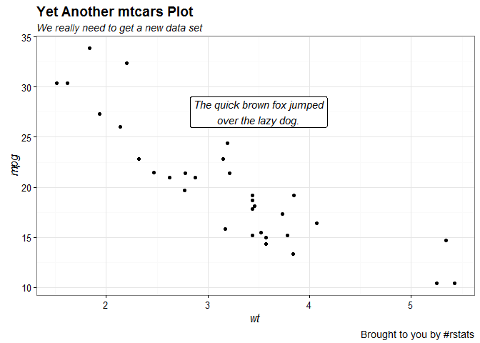
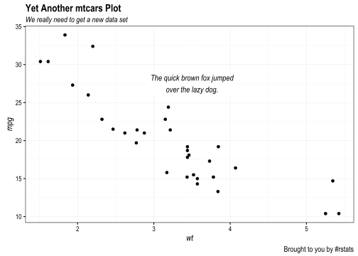
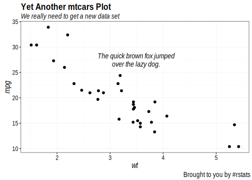

PDF Device Tests
hrbrmstr
May 25, 2016
library(ggplot2)
library(extrafont)
library(svglite)
loadfonts()
gg <- ggplot(mtcars, aes(wt, mpg))
gg <- gg + geom_point()
gg <- gg + geom_label(aes(x=3.5, y=27.5, label="The quick brown fox jumped\nover the lazy dog."),
family="Arial Narrow", fontface="italic", size=4, label.size=0)
gg <- gg + labs(title="Yet Another mtcars Plot",
subtitle="We really need to get a new data set",
caption="Brought to you by #rstats")
gg <- gg + theme_bw(base_family = "Arial Narrow")
gg <- gg + theme(axis.title=element_text(family="Arial Narrow", face="italic"))
gg <- gg + theme(plot.title=element_text(family="Arial Narrow", face="bold"))
gg <- gg + theme(plot.subtitle=element_text(family="Arial Narrow", face="italic"))
gg <- gg + theme(plot.caption=element_text(family="Arial Narrow", face="plain"))PNG device

JPEG device

TIFF device
SVG device

SVGLITE device
